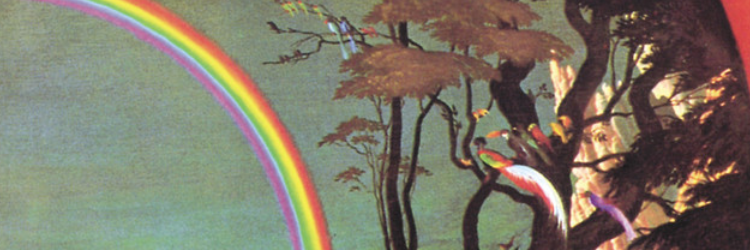

 bluezcreen.site
bluezcreen.site
 Hosted on Github Pages
Hosted on Github Pages
ver.II/26, last updated 16 February 2026
🄯2026 bluezcreen Outcorporated. All wrongs reserved.
Built (almost) from scratch with HTML, CSS, and JavaScript (no shit), hosted on Github Pages. coded and pushed entirely on mobile.- inspirations:

sweetfish.site
largest inspiration for this website

dabric.xyz
another minor inspiration (cool landing page btw)
- Cbox
chatbox used in homepage - Wikimedia Commons
used in some banners/images - Font Awesome
icons used in the navbar - Space Grotesk
font used in this site (regular and semibold) - Spaceship
domain provider - banners
"they're just album covers"
- homepage - Lamp's "For Lovers"
- gramaphone - Masayoshi Takanaka's "All of Me"
- drawer - Panchiko's "Ferric Oxide"
- about - Masayoshi Takanaka's "The Rainbow Goblins"
- Strawpage I (first website)
- Strawpage II
- Strawpage III
- Mk. I
- Mk. II
Neocities Mk. III(deprecated mirror page, now redirects here)- Mk. III (current)
- TempleOS easter egg
- Old bio page